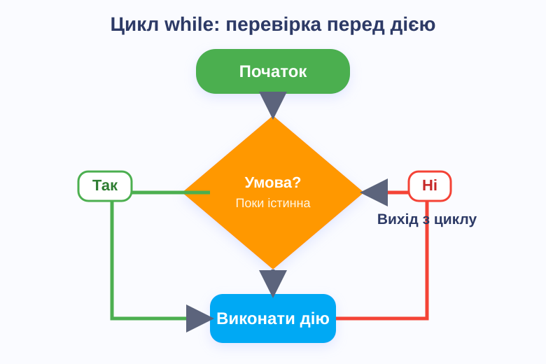
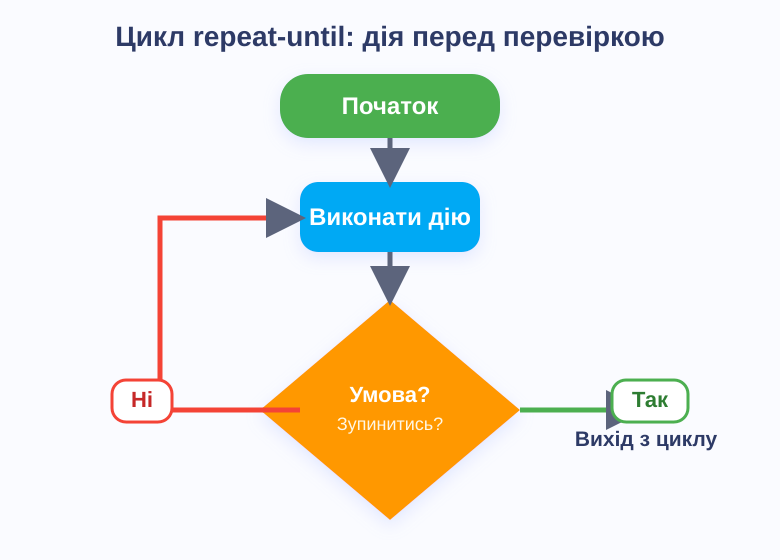

Блок-схеми: від простого до складного
Довідник для учнів 5–8 класів
Зміст
1 Що таке блок-схема?
Уяви, що ти хочеш пояснити другу, як доїхати від школи до твого будинку. Ти будеш говорити щось на кшталт: «Вийди зі школи, поверни ліворуч, іди прямо до світлофора, якщо горить зелений — переходь, якщо ні — почекай…»
Блок-схема — це те саме, але намальоване за допомогою фігур і стрілок. Кожна фігура — один крок. Стрілка показує, який крок іде наступним.
Навіщо це потрібно? Блок-схеми допомагають перш ніж писати програму, продумати її логіку. Усі навіть найскладніші програми, ігри та застосунки побудовані з таких самих простих кроків!
Алгоритм — це чітка послідовність кроків для вирішення задачі. Блок-схема — це зображення алгоритму.
2 Фігури та їх значення
У кожної фігури — своя роль. Запам'ятати просто: форма підказує, що відбувається.
Початок / Кінець — овал
Кожна схема починається зеленим овалом «Початок» і закінчується овалом «Кінець». Без них схема неповна — як речення без крапки!
Дія (процес) — прямокутник
Будь-яка дія, яку виконує алгоритм: «Взяти хліб», «Порахувати суму», «Вимкнути світло». Найпоширеніший блок у схемах.
Умова (рішення) — ромб
Питання, на яке є лише дві відповіді: Так або Ні. Від ромба виходять дві стрілки — по одній на кожну відповідь. У цьому редакторі вони мають фіксований напрямок, але в різних підручниках конвенція може відрізнятися.
Конвенція цього редактора: стрілка «Так» завжди виходить ліворуч від ромба, стрілка «Ні» — праворуч. Це одна з двох поширених конвенцій. У деяких підручниках вони можуть бути розташовані інакше — головне, щоб у межах однієї схеми напрямки були послідовними і кожна стрілка мала підпис.
Ввід / Вивід — паралелограм
Паралелограм — це нахилений прямокутник. Він позначає отримання даних від користувача («Введіть число») або виведення результату («Виводить відповідь»).
Підпрограма — прямокутник з лініями 9–11 кл.
Прямокутник із двома вертикальними смугами по боках. Означає виклик окремого готового алгоритму: наприклад, «Намалювати коло» або «Зашифрувати текст». Деталі цієї дії описані окремо.
З'єднувач — коло 8–11 кл.
Невелике коло з літерою або цифрою. Якщо схема не вміщається на аркуші, потік переривається: ставиш «А» тут і «А» там — і читач розуміє, що треба перейти на ту «А».
Підказка: Не знаєш, яку фігуру вибрати? Постав собі питання: «Тут щось запитується?» — ромб. «Тут щось виводиться або вводиться?» — паралелограм. «Тут просто щось робиться?» — прямокутник.
3 Як малювати в редакторі
- 1 Додай фігуру — натисни на потрібну кнопку в лівій панелі. Фігура з'явиться на полотні автоматично.
- 2 Впиши текст — двічі натисни на фігуру. З'явиться вікно для введення тексту.
- 3 Переміщуй — тягни фігуру мишкою або пальцем, щоб розставити їх по порядку зверху вниз.
- 4 З'єднуй стрілками — наведи мишку на фігуру, поки не з'явиться білий кружечок. Тягни від кружечка до іншої фігури.
- 5 Від ромба — вибери тип — коли з'єднуєш від «Умови», редактор запитає: «Так» чи «Ні»? Зелена стрілка — «Так», червона — «Ні».
- 6 Налаштуй маршрут стрілки — виділи стрілку і натисни кнопку Маршрут (або клавішу R). Для циклів зручні режими «Обхід ліворуч» і «Обхід праворуч».
- 7 Збережи — кнопка Зберегти зображення збереже PNG-картинку. Кнопка Зберегти проєкт збереже JSON-файл для подальшого редагування. Відкривай лише ті JSON-файли, які сам зберіг у цьому редакторі — файли з інших програм можуть не відкритися коректно.
- 8 Скасуй помилку — кнопка зі стрілкою ліворуч або Ctrl+Z скасовують останню дію. Кнопка зі стрілкою праворуч або Ctrl+Y повертають скасоване.
Автозбереження! Редактор сам зберігає твою роботу в браузері. Якщо випадково закрив вкладку — не біда: при наступному відкритті з'явиться питання «Відновити?»
4 Лінійний алгоритм
ЛінійнийРівень складності:Найпростіший вид алгоритму: кроки йдуть один за одним, без розгалужень і повторень. Як рецепт, де все просто по порядку.
Структура: Початок → Дія → Дія → … → Кінець
Приклад: ранкові збори до школи

Лінійний алгоритм: кроки йдуть суворо один за одним без будь-яких умов
Зверни увагу: тут є ромб «Дощ?». Це вже крок до розгалуження! Але до і після ромба — чисті лінійні ділянки.
Правило: Починай завжди з «Початок» і закінчуй «Кінець». Навіть найпростіша схема мусить мати ці два блоки.
5 Розгалуження (умова)
РозгалуженийРівень складності:Іноді алгоритм повинен «думати» і вибирати між двома шляхами. Для цього є ромб — блок умови.
| Вид розгалуження | Опис | Приклад |
|---|---|---|
| Неповне | Якщо «Так» — виконуємо дію. Якщо «Ні» — нічого не робимо, просто йдемо далі. | «Є масло? Так → намастити. Ні → пропустити» |
| Повне | І «Так», і «Ні» ведуть до різних дій, і обидва шляхи потім зливаються знову. | «Вік ≥ 18? Так → «Доступ дозволено». Ні → «Доступ заборонено»» |
Приклад 1: бутерброд (неповне розгалуження)

Неповне розгалуження: гілка «Ні» не містить жодних дій — алгоритм просто пропускає намащування
Приклад 2: перевірка доступу (повне розгалуження)

Повне розгалуження: обидві гілки («Так» і «Ні») ведуть до різних дій, і потім обидві приходять до «Кінець»
Пам'ятай про стрілки: зелена стрілка від ромба означає «Так», червона — «Ні». Завжди підписуй їх у схемі!
У цьому редакторі «Так» виходить ліворуч, «Ні» — праворуч. Якщо у твоєму підручнику інша конвенція — це нормально: обидва варіанти є правильними, якщо стрілки підписані.
6 Введення та виведення даних
Лінійний + Ввід/ВивідРівень складності:Паралелограм — нахилена фігура — позначає, що алгоритм взаємодіє із зовнішнім світом:
- Ввід — програма чекає, поки користувач введе щось (число, текст, відповідь).
- Вивід — програма показує результат на екрані, виводить повідомлення.
Приклад: калькулятор

Фіолетові паралелограми — введення і виведення. Блакитний прямокутник — обчислення (дія).
Помітив різницю між фіолетовим паралелограмом і блакитним прямокутником? Паралелограм — це завжди «дати» або «отримати» дані. Прямокутник — «порахувати» або «зробити».
Приклад: комп'ютерна гра

Лінійний алгоритм з неповним розгалуженням: якщо є вільний час — вмикаємо комп'ютер і запускаємо гру
7 Цикли (повторення)
ЦиклічнийРівень складності:Цикл потрібен, коли один і той самий набір дій треба повторити кілька разів. Замість того, щоб малювати 100 однакових блоків, малюємо один блок і пускаємо стрілку назад.
Головна ознака циклу на блок-схемі: одна зі стрілок іде назад, до блоку, який уже був раніше. Саме ця стрілка «замикає» цикл.
У шкільних задачах трапляються три основні типи циклів:
Тип 1: Цикл while — «поки виконується умова»
Спочатку перевіряємо умову, і тільки якщо вона виконується — йдемо всередину циклу.
- Приходимо до ромба-умови.
- Якщо Так — виконуємо дію і повертаємося до ромба знову.
- Якщо Ні — виходимо з циклу, йдемо далі.
Приклад: «Поки є яйця в кошику — клади їх до коробки». Якщо яєць немає від самого початку — нічого не робиш.

Цикл while: умова перевіряється до виконання дії. Стрілка «Так» повертається назад — це і є «петля» циклу. Натисни на зображення, щоб відкрити окремо.
Тип 2: Цикл repeat-until — «повторюй, поки не виконається умова»
Спочатку виконуємо дію, і тільки після цього перевіряємо умову для зупинки.
- Відразу виконуємо дію (хоча б один раз!).
- Якщо умова зупинки ще Ні — повертаємося і виконуємо дію ще раз.
- Якщо умова зупинки Так — виходимо з циклу.
Приклад: «Підбери число від 1 до 6 (кинь кубик). Якщо випало 6 — стоп, якщо ні — кидай ще раз». Кубик кидається мінімум один раз.

Цикл repeat-until: дія виконується до перевірки умови. Стрілка «Ні» повертає назад — умова ще не виконана, тому повторюємо. Натисни на зображення, щоб відкрити окремо.
Чим відрізняються два типи циклів?
| Критерій | while (поки) | repeat-until (повтор до) |
|---|---|---|
| Де стоїть умова? | На початку циклу | В кінці циклу |
| Чи виконається хоча б раз? | Не обов'язково (може 0 разів) | Завжди мінімум 1 раз |
| Яка стрілка «замикає»? | Стрілка «Так» від ромба повертає назад | Стрілка «Ні» від ромба повертає назад |
| Аналогія | «Якщо кава гаряча — дмухай, потім спробуй ще раз» | «Дмухни, спробуй. Ще гаряча? Дмухни знову» |
Коли заздалегідь відомо, скільки разів треба повторити дію,
використовують цикл із лічильником (у мовах програмування — for).
У блок-схемі він будується з трьох частин:
Тип 3: Цикл for — «повтори рівно N разів»
-
Початкове значення лічильника — блок дії:
наприклад, «
i := 1». Виконується один раз до початку циклу. -
Перевірка умови — ромб: «
i ≤ n?». Якщо Так — виконуємо тіло циклу. Якщо Ні — виходимо. - Тіло циклу — один або кілька блоків дії.
-
Зміна лічильника — блок дії: «
i := i + 1». Після нього стрілка повертається назад до ромба.
Приклад: «Вивести числа від 1 до 10» або «Порахувати суму 100 доданків».
Цикл for: ліворуч від ромба — гілка «Так» виконує тіло і збільшує лічильник, потім повертається до перевірки. Праворуч — гілка «Ні» завершує цикл.
Як намалювати в редакторі:
додай блок «Дія» (i := 1), потім ромб (i ≤ n?),
потім «Тіло», потім «Дія» (i := i + 1).
З'єднай останній блок назад до ромба і для цієї стрілки вибери маршрут
«Обхід ліворуч».
Для порівняння — усі три типи циклів мають однакову будову у блок-схемі (ромб + зворотна стрілка). Різниця лише в тому, що стоїть до і після ромба:
| Цикл | До ромба | Після ромба (гілка «Так») | Зворотна стрілка |
|---|---|---|---|
| while | нічого | тіло циклу | «Так» — назад до ромба |
| repeat-until | тіло циклу | нічого (вихід) | «Ні» — назад до тіла |
| for | ініціалізація лічильника (i := 1) |
тіло + зміна лічильника (i := i + 1) |
«Так» — назад до ромба |
Як намалювати цикл у редакторі: виділи стрілку, яка іде назад, і натисни кнопку Маршрут (або клавішу R) кілька разів. Вибери режим «Обхід ліворуч» або «Обхід праворуч» — стрілка красиво обійде всі блоки збоку.
Увага — нескінченний цикл! Якщо умова ніколи не стає «Ні» (або «Так» для repeat-until), цикл ніколи не закінчиться. Перевіряй: чи обов'язково настане момент, коли умова зміниться?
8 Підпрограма та з'єднувач
Просунутий рівеньРівень складності:Підпрограма
Уяви, що в алгоритмі одні й ті самі 5 кроків повторюються в трьох різних місцях. Замість малювати їх тричі — виносимо їх в окрему «підпрограму» і просто викликаємо її.
У блок-схемі це виглядає як прямокутник із двома вертикальними рисками по боках — сигнал «тут виконується окремий алгоритм, деталі — в окремій схемі».
Виклик підпрограми
Деталі «Сортування» — в окремій схемі
Навіщо підпрограми? Вони роблять схему компактнішою і зрозумілішою. Головна схема показує загальну логіку, а деталі — у допоміжних схемах. Це принцип «розділяй і володарюй».
З'єднувач
Якщо схема дуже велика і не вміщається на одному аркуші — допомагає з'єднувач. Це невелике коло з буквою чи цифрою.
Правило просте: якщо поставив коло «A» в одному місці схеми — постав таке саме коло «A» в іншому. Це означає: «Продовжуй схему звідси».
Перехід «1»
Знайди таке саме коло «1» — і продовжуй звідти
Важливо: З'єднувачі завжди використовуються парами. Якщо є вхідний «А» — десь має бути і вихідний «А». Без пари з'єднувач не має сенсу.
✓ Підсумок
| Тип алгоритму | Ключова фігура | Клас |
|---|---|---|
| Лінійний — кроки один за одним | Тільки прямокутники | 5–6 клас |
| Розгалужений — вибір з двох шляхів | Ромб (умова) | 6–7 клас |
| З даними — введення і виведення | Паралелограм | 6–7 клас |
| Цикл while — умова перед дією | Ромб + зворотна стрілка «Так» | 7–8 клас |
| Цикл for — повторення з лічильником | Ромб + ініціалізація + зміна лічильника | 7–9 клас |
| Цикл repeat-until — умова після дії | Ромб + зворотна стрілка «Ні» | 7–8 клас |
| З підпрограмою — виклик допоміжного алгоритму | Прямокутник з рисками | 9–11 клас |
Цікаво знати: Будь-яку комп'ютерну програму — від простого калькулятора до складної гри — можна повністю описати блок-схемою. Всі ці схеми складаються лише з кількох базових типів, які ти вже знаєш!